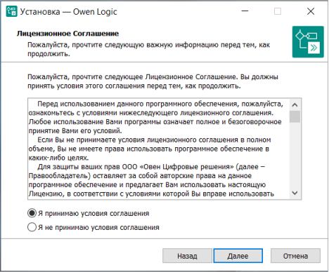
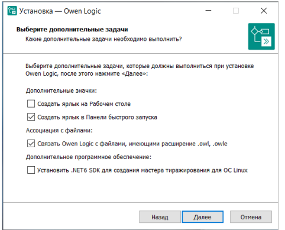

Откроется окно мастера установки. Ознакомьтесь с информацией и нажмите кнопку Далее.

Ознакомьтесь с лицензионным соглашением и, в случае согласия, выберите Я принимаю условия соглашения. Нажмите кнопку Далее.

В открывшемся окне, при необходимости, установите чекбоксы:
- Создать ярлык на рабочем столе.
- Создать ярлык в Панели быстрого запуска.
- Связать Owen Logic с файлами, имеющими расширение .owl, .owle — для автоматического
открытия файлов с указанным расширением в Owen Logic.
- Установить .NET 6 SDK — если библиотека не установлена, то мастер тиражирования
на ОС Linux работать не будет.
Нажмите кнопку Далее.